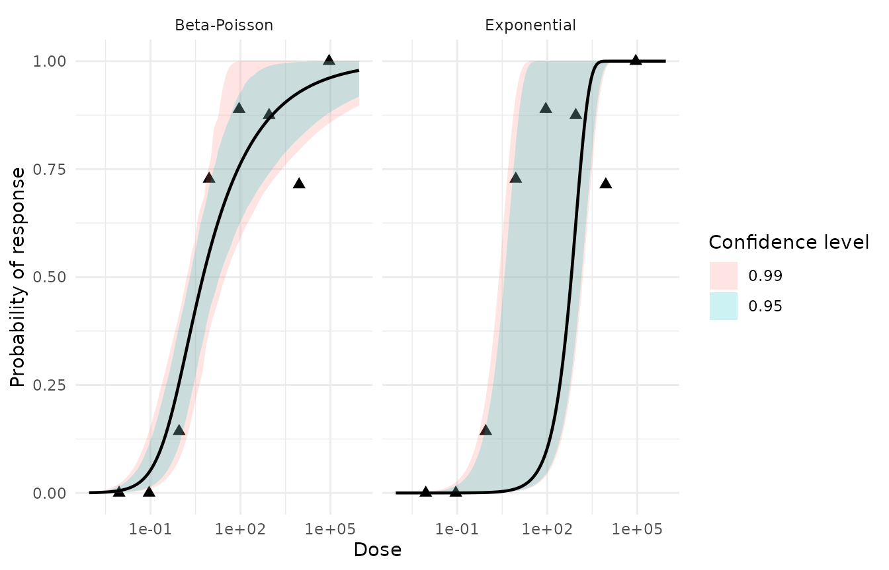
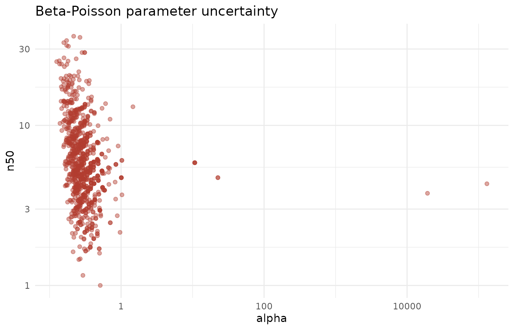

Getting started: a start-to-finish dose-response walkthrough
Source:vignettes/getting-started.Rmd
getting-started.RmdThis vignette walks the Ward rotavirus human-challenge data from raw counts to a reported risk number, interpreting every output along the way. It answers two questions an end user actually has: what does my data need to look like going in, and what are the results saying coming out.
Load
The analysis needs three columns, one row per dose
group: the administered dose, and the numbers of
subjects who did (positive) and did not
(negative) respond. The package ships this exact shape as
ward_rotavirus:
data(ward_rotavirus)
ward_rotavirus
#> dose positive negative
#> 1 9e+04 3 0
#> 2 9e+03 5 2
#> 3 9e+02 7 1
#> 4 9e+01 8 1
#> 5 9e+00 8 3
#> 6 9e-01 1 6
#> 7 9e-02 0 7
#> 8 9e-03 0 7There are two ways in. The in-memory path standardizes a data frame you already have:
ward <- as_dose_response(ward_rotavirus)
ward
#> # A tibble: 8 × 5
#> dose positive negative total response
#> <dbl> <dbl> <dbl> <dbl> <dbl>
#> 1 0.009 0 7 7 0
#> 2 0.09 0 7 7 0
#> 3 0.9 1 6 7 0.143
#> 4 9 8 3 11 0.727
#> 5 90 8 1 9 0.889
#> 6 900 7 1 8 0.875
#> 7 9000 5 2 7 0.714
#> 8 90000 3 0 3 1The from-disk path reads the same data from the bundled text file — this is what you would use for your own delimited file:
ward_path <- system.file("extdata", "Ward_rotavirus.txt", package = "singlehit")
ward_from_file <- read_dose_response(ward_path)
identical(ward, ward_from_file)
#> [1] TRUEBoth routes produce the standardized
dose · positive · negative · total · response tibble, where
total = positive + negative and
response = positive / total. Column names are auto-detected
case- and punctuation-insensitively (pos,
positive_response, etc.); override detection with
as_dose_response(data, dose =, positive =, negative =).
Rows sharing a dose are summed. Fitting requires at least 3
distinct doses and more than 1 total positive
response — non-conforming data is rejected with an explanatory
error.
Run
analyze_dose_response() does everything in one call:
trend test, model fits, diagnostics, comparison, assessment, and
bootstrap uncertainty. A fixed seed makes the bootstrap
reproducible.
analysis <- analyze_dose_response(
ward,
bootstrap_times = 1000, # reduced for a fast vignette build; the default is 10000
resample = "observed",
seed = 2026
)
analysis
#> <qdr_analysis> microbial dose-response analysis
#> Trend: Z = 5.036, one-sided p = 2.38e-07
#>
#> Model assessment:
#> # A tibble: 2 × 3
#> model recommendation conclusion
#> <chr> <chr> <chr>
#> 1 beta_poisson recommended Beta-Poisson shows an adequate fit and is prefer…
#> 2 exponential not_recommended Exponential does not show an adequate fit and is…
#>
#> Model comparison:
#> # A tibble: 2 × 19
#> model parameters converged log_lik deviance AIC BIC delta_AIC delta_BIC
#> <chr> <int> <lgl> <dbl> <dbl> <dbl> <dbl> <dbl> <dbl>
#> 1 beta_po… 2 TRUE -8.69 6.82 21.4 25.5 0 0
#> 2 exponen… 1 TRUE -72.6 135. 147. 149. 126. 124.
#> # ℹ 10 more variables: deviance_difference <dbl>, chi_square_df <int>,
#> # chi_square_critical <dbl>, chi_square_p_value <dbl>,
#> # significant_improvement <lgl>, preferred <lgl>, preferred_by_AIC <lgl>,
#> # preferred_by_BIC <lgl>, selection <chr>, conclusion <chr>
#>
#> Bootstrap replicates per model: 1000The rest of this vignette unpacks each component of that
qdr_analysis object.
Interpret each output
Trend — is there a dose-response signal at all?
analysis$trend
#> # A tibble: 1 × 5
#> statistic p_value alpha passes alternative
#> <dbl> <dbl> <dbl> <lgl> <chr>
#> 1 5.04 0.000000238 0.05 TRUE increasingdose_trend_test() runs a one-sided log-dose trend test.
passes = TRUE means a monotonic increasing
dose-response relationship was detected — response rises with dose.
What this is really saying: if
passeswereFALSE, there is no upward dose-response signal to model, and fitting mechanistic curves would not be warranted. Here it passes, so we proceed.
Goodness of fit — does each model fit the data at all?
analysis$goodness_of_fit
#> # A tibble: 2 × 8
#> model deviance df critical_value p_value good_fit assessment conclusion
#> <chr> <dbl> <int> <dbl> <dbl> <lgl> <chr> <chr>
#> 1 exponen… 135. 7 14.1 6.92e-26 FALSE inadequate Exponenti…
#> 2 beta_po… 6.82 6 12.6 3.38e- 1 TRUE adequate Beta-Pois…This is the absolute check. Each model’s
deviance is compared against a chi-squared
critical_value; good_fit is TRUE
when the deviance falls below it (equivalently, p_value
> 0.05). assessment records adequate or
inadequate.
What this is really saying: does this model describe the data acceptably on its own terms? A model can “win” a comparison and still fit badly — this is the gate that catches that.
Comparison — which model wins, and did the extra parameter earn its keep?
analysis$comparison
#> # A tibble: 2 × 19
#> model parameters converged log_lik deviance AIC BIC delta_AIC delta_BIC
#> <chr> <int> <lgl> <dbl> <dbl> <dbl> <dbl> <dbl> <dbl>
#> 1 beta_po… 2 TRUE -8.69 6.82 21.4 25.5 0 0
#> 2 exponen… 1 TRUE -72.6 135. 147. 149. 126. 124.
#> # ℹ 10 more variables: deviance_difference <dbl>, chi_square_df <int>,
#> # chi_square_critical <dbl>, chi_square_p_value <dbl>,
#> # significant_improvement <lgl>, preferred <lgl>, preferred_by_AIC <lgl>,
#> # preferred_by_BIC <lgl>, selection <chr>, conclusion <chr>This is the relative check. The two-parameter
Beta-Poisson is tested against the one-parameter Exponential (its nested
limiting case) via the deviance_difference on the extra
degree of freedom, alongside AIC/BIC and their
deltas. significant_improvement and preferred
flag the winner.
What this is really saying: the Beta-Poisson always fits at least as well because it has an extra parameter —
significant_improvementasks whether that extra flexibility bought a statistically real improvement, or just curve-fit noise.
Assessment — the headline verdict
analysis$assessment[, c("model", "appropriate", "preferred", "recommendation", "conclusion")]
#> # A tibble: 2 × 5
#> model appropriate preferred recommendation conclusion
#> <chr> <lgl> <lgl> <chr> <chr>
#> 1 beta_poisson TRUE TRUE recommended Beta-Poisson shows an adeq…
#> 2 exponential FALSE FALSE not_recommended Exponential does not show …build_model_assessment() fuses the absolute and relative
checks into one recommendation label per model:
-
recommended— fits adequately and is preferred. -
acceptable_alternative— fits adequately but is not preferred. -
preferred_but_inadequate— preferred but does not fit adequately (a red flag: the “best” model is still wrong). -
not_recommended— neither.
What this is really saying: this is the one row a risk assessor reads first.
recommendedmeans “use this model with confidence”; theconclusioncolumn spells it out in plain language.
Consensus — an experimental cross-check
consensus_model_decision(analysis)
#> # A tibble: 2 × 13
#> model chi_squared_vote AIC_vote BIC_vote votes consensus_selected decision
#> <chr> <lgl> <lgl> <lgl> <int> <lgl> <chr>
#> 1 beta_poi… TRUE TRUE TRUE 3 TRUE selected
#> 2 exponent… FALSE FALSE FALSE 0 FALSE not_sel…
#> # ℹ 6 more variables: agreement <chr>, criteria_available <int>,
#> # chi_squared_choice <chr>, AIC_choice <chr>, BIC_choice <chr>,
#> # conclusion <chr>consensus_model_decision() treats the chi-squared, AIC,
and BIC selections as three votes and reports the agreement
level (unanimous, majority, or
no_consensus).
What this is really saying: an experimental sanity check on the relative selection. It does not replace the absolute goodness-of-fit gate above — a unanimously-voted model can still fit inadequately.
Bootstrap intervals — the final risk numbers and their uncertainty
bootstrap_confint(analysis$bootstraps$beta_poisson, levels = c(0.95))
#> # A tibble: 4 × 5
#> model term level lower upper
#> <chr> <chr> <dbl> <dbl> <dbl>
#> 1 beta_poisson alpha 0.95 0.161 0.707
#> 2 beta_poisson ed10 0.95 0.0766 0.790
#> 3 beta_poisson ed50 0.95 2.06 19.6
#> 4 beta_poisson n50 0.95 2.06 19.6The bootstrap refits the model to resampled data many times and
reports percentile confidence intervals — not just for the parameters
(alpha, n50) but for the effective
doses ed10 and ed50: the doses
producing a 10% and 50% response.
What this is really saying: these are the deliverable.
ed50is the median infectious dose; its interval is the honest uncertainty around it, driven by how much data you have and how noisy it is.
Plots
autoplot() on the analysis shows each fitted curve over
the observed points:
ggplot2::autoplot(analysis)
autoplot() on a bootstrap object shows the sampling
distribution of the fitted parameters — the visual form of the intervals
above:
ggplot2::autoplot(analysis$bootstraps$beta_poisson)
The final answer
Read the recommended model’s ed50 and its interval, and
you have the number a risk assessor reports:
# Which model did the assessment recommend?
recommended <- analysis$assessment$model[analysis$assessment$recommendation == "recommended"][1]
recommended
#> [1] "beta_poisson"
# Its bootstrap intervals, then keep only the ed50 row.
ci <- bootstrap_confint(analysis$bootstraps[[recommended]], levels = c(0.95))
ci[ci$term == "ed50", ]
#> # A tibble: 1 × 5
#> model term level lower upper
#> <chr> <chr> <dbl> <dbl> <dbl>
#> 1 beta_poisson ed50 0.95 2.06 19.6That single row — the median infectious dose of the recommended model with its 95% percentile interval — is the deliverable: the dose at which half of exposed subjects are expected to be infected, with a defensible bound on how sure we are.